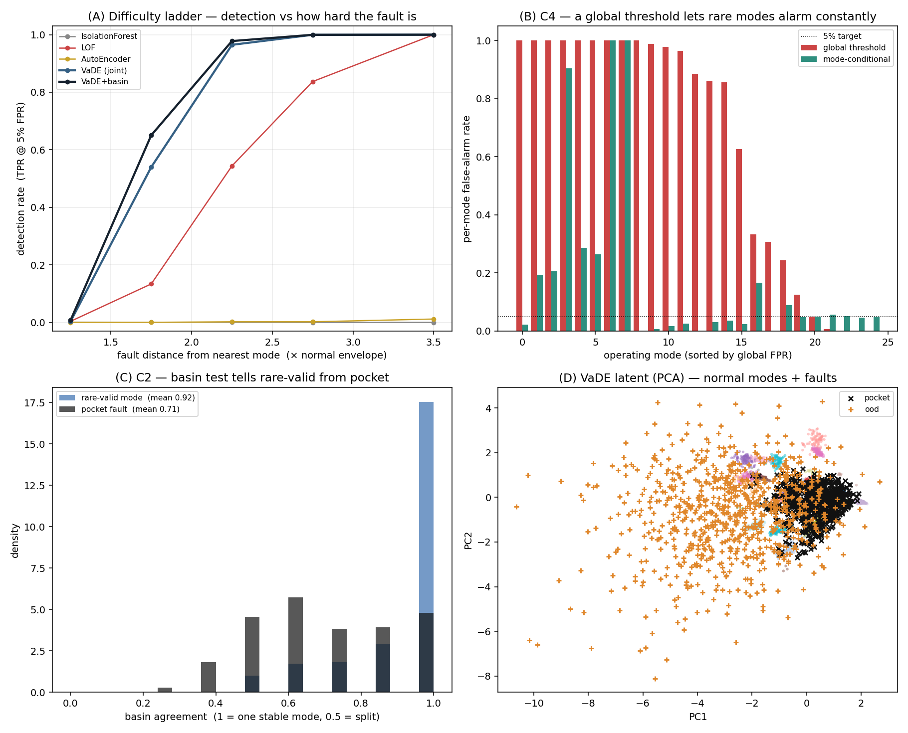

Physically-Grounded Anomaly Detection for Massively-Multimodal Cyber-Physical Normal Data
1Holon Institute of Technology (HIT) · 2Afeka College of Engineering
Preliminary proof-of-concept report on synthetic data. Real-testbed validation (WADI / SWaT / HAI) in progress.
Anomaly detection in transportation cyber-physical systems (CPS) is limited less by the scarcity of faults than by the difficulty of modelling normal behaviour. We formalize CPS normal operation as Massive, Implicit, Imbalanced, Multimodal (MIIM): a mixture of a large number of unlabeled operating modes, each concentrated near a low-dimensional manifold, with mode frequencies spanning orders of magnitude. We show this structure induces three detector errors — false positives on rare-but-valid modes, false negatives on faults hidden in the interpolated gaps between modes, and an inability to calibrate detectors without labeled faults — and we state, for each, an explicit decision rule. A joint variational latent model with a Gaussian-mixture prior discovers the modes; on top of it four components each target one failure: (C1) physically-guided generation of controllable, physically-valid boundary faults, which also supplies labels for supervised training; (C2) a basin-of-attraction test that separates rare-valid modes from faults by latent dynamics; (C3) an ensemble of mode-subset detectors — including supervised members trained on C1 anomalies — that catches over-interpolated faults; and (C4) mode-conditional risk control, which replaces the mean false-alarm rate with a per-mode worst-case guarantee. On a controlled MIIM benchmark the framework substantially outperforms standard detectors; on physically-valid faults, Isolation Forest and a single autoencoder are effectively blind while the framework detects them; a supervised ensemble trained only on C1 anomalies transfers to unseen fault families; and mode-conditional calibration eliminates systematically false-alarming modes that the mean rate hides. We report a full ablation and are explicit about scope: all results are synthetic; real-testbed validation is the next step.
Modern transportation platforms — road vehicles, rail rolling stock, maritime vessels — are deeply integrated cyber-physical systems: sensors, embedded software, control logic, and physical actuators that continuously sense and act on their own state. A contemporary locomotive coordinates hundreds of electronic control units and thousands of signals. This complexity makes faults impossible to enumerate in advance; they develop slowly as wear or drift, and must be discovered from the system's own behaviour as it operates — the task of anomaly detection. Detecting a developing fault before it culminates in failure is of direct operational and societal importance: in transportation an undetected fault is a potential safety event, and a detector that constantly false-alarms is switched off.
Framing anomaly detection as characterising anomalies is misleading: genuine faults are rare and unrepresentative, so the information lies in the abundant normal data. Our thesis is that the hard problem is modelling normal behaviour, and that CPS normal data has a specific, exploitable structure. Section 3 formalizes this structure (MIIM) and the three errors it induces; Section 4 constructs a benchmark that reproduces it; Section 5 develops the foundation and four components with explicit decision rules; Section 6 reports experiments and a per-component ablation.
CPS/ICS benchmarks and detectors. Industrial control-system testbeds — SWaT and WADI [1,2], HAI [3], BATADAL [4] — are the standard evaluation ground. Multivariate detectors evaluated on them include reconstruction/forecasting models (OmniAnomaly [5], USAD [6], TranAD [7]), graph models (GDN [8], MTAD-GAT [9]), MAD-GAN [10] and the Anomaly Transformer [11]; Ruff et al. [12] give a unifying review. Several results rely on point-adjustment scoring shown to inflate F1 [13], which we avoid.
Deep and shallow detectors. Reconstruction (autoencoders, the VAE [14]), one-class (Deep SVDD [15], DROCC [16]), density/energy (DAGMM [17]), self-supervised (NeuTraL-AD [18]), and non-deep baselines — Isolation Forest [19], LOF [20], ECOD/COPOD [21]. Deep clustering with generative latents: VaDE [22] gives our foundation; GMVAE [23] documents the cluster-degeneracy we encounter and fix; DAGMM [17] is the anomaly-focused member; S3VDC [24] supplies collapse-mitigation (KL/β-annealing, mini-batch init). Multimodal normal, synthetic anomalies, whitening: multi-regime normal is known in prognostics (C-MAPSS [25]) and contextual anomaly detection [26] explains why ignoring regime causes false positives, yet no established CPS method isolates the rare-but-valid-mode false positive we target. Outlier exposure [27] and CutPaste [28] create proxy anomalies; channel-shuffling to break joint structure (our C1) has no established named predecessor and is presented as a contribution. Label-free ranking has been studied via excess-mass / mass-volume curves [29]. Our whitened score uses Ledoit-Wolf shrinkage [30] and follows the Mahalanobis-distance OOD line [31]. The operational cost of false alarms in rail predictive maintenance is documented in CBM/PdM surveys [32,33].
Let an observation (a sensor window) be $x\in\mathbb{R}^d$, drawn in normal operation from a distribution $p_{\mathcal N}$. We state the MIIM structure as assumptions.
Normal set and anomalies. Write the normal support as $\mathcal N=\bigcup_{k}\mathcal M_k$ (up to an $\epsilon$-envelope). A point is anomalous when it is far from every mode manifold: $$\textstyle x\ \text{is anomalous}\iff \operatorname{dist}(x,\mathcal N)=\min_k\operatorname{dist}(x,\mathcal M_k)>\tau .$$ A detector outputs a score $s:\mathbb R^d\to\mathbb R$ (higher = more anomalous) and the decision rule $\hat y(x)=\mathbb 1[\,s(x)>\tau\,]$.
The three MIIM errors. Under A1–A5 a single global model exhibits three failures:
The framework of Section 5 pairs one component with each error (C2$\to$E1, C3$\to$E2, C1$\to$E3), and adds C4 to convert the aggregate guarantee into a per-mode one.
Absent access-cleared real data (Section 7), we construct a controlled benchmark that realizes A1–A5 and provides ground-truth modes for measurement. This section answers three modelling questions explicitly: how modes are modelled, the input dimension, and how mode boundaries are defined.
Modes (A1–A2). We use $K=40$ modes. Each mode $k$ has a regime coordinate $u\sim\mathcal N(0,\sigma_k^2 I_r)$ of intrinsic dimension $\mathbf{r=3}$, mapped to observation space by a smooth, mode-specific nonlinear embedding $$g_k(u)=A_k u+b_k+0.35\,\tanh\!\big(1.3\,(A_k u+b_k)^{\leftarrow}\big),$$ where $A_k\in\mathbb R^{d\times r}$, $b_k\in\mathbb R^{d}$ are fixed random parameters (a deterministic per-mode seed), and $(\cdot)^{\leftarrow}$ denotes channel reversal, which couples channels and creates a curved manifold (so the joint structure of A5 is non-trivial). The input dimension is $\mathbf{d=24}$ channels, with intrinsic mode dimension $r=3$.
Imbalance (A3). Weights follow $\pi_k\propto \mathrm{rank}(k)^{-\beta}$, $\beta=2$, so the commonest modes carry thousands of samples and the rarest carry single digits.
Mode boundary. A point belongs to mode $k$ within the noise envelope of $\mathcal M_k$. Operationally we measure distance to the nearest mode by a Mahalanobis distance with a pooled within-mode covariance $S$ (means $\bar x_k$ estimated per mode, $S$ shrunk via Ledoit-Wolf): $$\sigma(x)=\min_k\sqrt{(x-\bar x_k)^\top S^{-1}(x-\bar x_k)} .$$ The normal envelope is the level set $E=Q_{0.99}\big(\sigma(x):x\sim p_{\mathcal N}\big)$, the $99^{\text{th}}$ percentile of $\sigma$ over normal data. A fault at $\sigma(x)/E\in[1,2]$ sits just outside the envelope (hard); $\sigma(x)/E\gg 1$ is a far, easy fault. This $\sigma$ is model-agnostic (it uses the true modes, never the detector), keeping the benchmark non-circular.
Bounded modes (A6). Each mode's regime coordinate is drawn from a Gaussian truncated at $\pm 2\sigma_k$, so $\mathcal M_k$ is a bounded manifold patch with hard edges and the between-modes region is empty (a pocket fault there is genuinely off-manifold, not a low-density tail).
Correlated, heteroscedastic noise (A7). Observation noise has a fixed non-isotropic covariance $\Sigma_{\varepsilon}=WW^\top+\operatorname{diag}(s^2)$ (low-rank cross-channel correlation $W$ plus heteroscedastic per-channel scale $s$). Because the decoder cannot reconstruct noise, residuals inherit $\Sigma_{\varepsilon}$ — which the whitened score of Section 5.2 exploits and a plain sum-of-squares cannot. (An isotropic option reproduces white noise, under which whitening is provably neutral; we keep it as an ablation control.)
Per-channel quantization (A7). Each channel is quantized to a fixed, heterogeneous resolution $\delta_c$ (a fraction of the channel scale), ranging from fine ADC-like channels to coarse, near-binary actuator states. Heterogeneous $\delta_c$ makes raw Euclidean distance across channels ill-defined, so distance-based detectors that assume homogeneous channels degrade — a realistic property that motivates learned per-channel scaling. Section 6.2 shows this is precisely where a local-density baseline (LOF) loses its advantage.
For the standard benchmark we inject OOD faults far outside every mode and pocket faults at $x=(1-t)\,c_a+t\,c_b$, $t\in[0.35,0.65]$, between two mode centroids $c_a,c_b$ (the E2 case). In addition, C1 (Section 5.3) generates dependency-violation faults that keep every channel's marginal real and break only the joint structure (A5).
The foundation is a variational autoencoder whose latent prior is a Gaussian mixture (VaDE [22]): encoder $q_\phi(z\mid x)=\mathcal N(z;\mu_\phi(x),\operatorname{diag}\sigma_\phi^2(x))$, decoder $p_\theta(x\mid z)$, latent $z\in\mathbb R^{\ell}$ ($\ell=10$), and $K$ learnable components $\{\pi_k,\mu_k,\Sigma_k\}$ whose means are the operating modes. Training maximises the evidence lower bound $$\mathcal L(x)=\mathbb E_{q_\phi}\!\big[\log p_\theta(x\mid z)\big]-\mathbb E_{q_\phi}\!\big[\mathrm{KL}\big(q_\phi(z\mid x)\,\|\,\textstyle\sum_k\pi_k\mathcal N(z;\mu_k,\Sigma_k)\big)\big],$$ so encoding and clustering are learned jointly. A practical obstacle is cluster collapse: without stabilisation, naive joint training collapses the 40 modes onto a handful of components (we observed as few as 5/40 used, clustering NMI $\approx0.38$), crippling rare-mode representation. We stabilise with a variance floor $\log\Sigma_k\!\ge\!\log 0.05$, a covariance penalty, a $\beta$-warm-up on the KL term, and a reduced learning rate on $\{\pi_k,\mu_k,\Sigma_k\}$; on the realistic benchmark this restores 37/40 components and lifts clustering NMI to 0.65 (above the sequential encode-then-cluster baseline's 0.57), and is decisive for all results below.
Let $\hat x=\mathbb E_\theta[x\mid \mu_\phi(x)]$ and residual $r(x)=x-\hat x$. Rather than $\|r\|^2$, which weights every channel equally and is dominated by noisy channels, we use the whitened residual energy (a Gaussian NLL) $$E_{\text{rec}}(x)=\tfrac12\,r(x)^\top\widehat\Sigma_r^{-1}\,r(x),$$ with $\widehat\Sigma_r$ a Ledoit-Wolf shrinkage estimate [30] of the residual covariance on normal data. The base anomaly score adds the nearest-component latent NLL — deliberately not the $\pi$-weighted mixture, so a rare mode is not penalised for being rare: $$s_0(x)=E_{\text{rec}}(x)\;-\;\max_{k}\ \log\mathcal N\!\big(\mu_\phi(x);\mu_k,\Sigma_k\big).$$
C1 manufactures the faults that do not otherwise exist, and the ones that matter: physically-valid boundary cases. (i) Generate: take normal windows $x^{(1)},x^{(2)}$ from different modes and copy a channel block $B$ from $x^{(2)}$ into $x^{(1)}$, giving $\tilde x$ with $\tilde x_B=x^{(2)}_B$ and $\tilde x_{\bar B}=x^{(1)}_{\bar B}$ — every channel keeps a real value, only the joint structure breaks. (ii) Certify with a detector-independent oracle $d_{\text{orc}}(x)=\tfrac1\kappa\sum_{j\le\kappa}\|x-\nu_j(x)\|$ ($\kappa$-NN distance to a true-normal reference $\{\nu\}$ from the same generative process), keeping $\tilde x$ iff $d_{\text{orc}}(\tilde x)>\tau_o$. (iii) Control difficulty by moving toward the nearest normal centroid $c^\star$: $x_\alpha=c^\star+\alpha(\tilde x-c^\star)$, $\alpha\in[0,1]$ ($\alpha{=}0$ normal, $\alpha{=}1$ raw fault). The realized difficulty is read off by $\sigma(x_\alpha)/E$ (Section 4.1). This yields a labeled fault set at controlled distances, enabling threshold calibration and detector ranking without real faults, and supplying positive labels for the supervised ensemble of C3.
A rare-but-valid mode and a fault can look alike to a density score (both lie in a low-density region); they differ in the dynamics of the latent potential $$U(z)=-\log\sum_{k}\mathcal N(z;\mu_k,\Sigma_k).$$ From $z_0=\mu_\phi(x)$ we run $R$ perturbed gradient-descent trajectories $z_{t+1}=z_t-\eta_t\,\nabla U(z_t)/\|\nabla U(z_t)\|$ and record the mode each converges to, $c_r(x)$. The basin agreement $$a(x)=\max_{c}\ \tfrac1R\textstyle\sum_{r=1}^{R}\mathbb 1[\,c_r(x)=c\,]$$ is $\approx 1$ when $x$ sits in one stable basin (valid, common or rare) and $\approx\tfrac12$ when $x$ sits on the separatrix between two modes (a pocket). Because $a$ reads geometry, not the rare component's mis-estimated density, it rescues rare valid modes: the C2 score replaces the density term by instability, $s_{2}(x)=\widetilde E_{\text{rec}}(x)+\widetilde{(1-a)}(x)$ (each term standardised on normal data). This is the "reconstruction+basin" configuration reported below.
A single model averages across modes and interpolates between them (E2). We instead build detectors that are each local to a subset of modes and combine them so a point is normal only if some member accepts it.
Per-mode reconstruction ensemble. Fit a reconstruction expert per discovered mode (input-space PCA $\Pi_k$ on that mode's points) and score by the minimum residual over experts: $s_3^{\text{rec}}(x)=\min_k\|x-\Pi_k x\|^2$. No expert has seen the between-modes region, so a pocket is reconstructed poorly by all — whereas a single global PCA interpolates and misses it.
Supervised mode-subset ensemble. Because one expert per mode is many models when $K$ is large, and because C1 supplies labeled anomalies, we form $M\ll K$ ensemble members: member $j$ draws a random subset $S_j$ of the discovered modes and trains a binary classifier $h_j$ on $\{(x,0):x\in\mathcal D_{S_j}\}\cup\{(a,1):a\in\mathcal A_{\text{C1}}\}$ (normal points of $S_j$ versus C1 anomalies). The ensemble score is $s_3^{\text{sup}}(x)=\tfrac1M\sum_j h_j(x)$. Diversity across subsets $S_j$ makes rare modes appear as negatives in some members, reducing their false-positive rate; and because $\mathcal A_{\text{C1}}$ is generated, detection becomes a supervised problem that, as Section 6 shows, transfers to fault families never seen in training.
An average false-alarm rate hides systematic per-mode failure: a rare but legitimate mode (e.g. a vehicle moving backwards) may be alarmed on every time it occurs, contributing negligibly to the mean yet guaranteeing a nuisance alarm whenever that mode is entered. Define the per-mode false-alarm rate and its worst case $$\mathrm{FPR}_k(\tau)=\Pr\big[s(x)>\tau\mid x\sim p_k\big],\qquad \mathrm{FPR}_{\max}(\tau)=\max_k \mathrm{FPR}_k(\tau),$$ and report $\mathrm{FPR}_{\max}$ (or a high quantile over modes) rather than the mean. To control it we replace the single threshold by mode-conditional thresholds: assign $x$ to its discovered cluster $c(x)$ and threshold against that cluster's own normal-score distribution, $$\tau_{c}=Q_{1-\alpha}\big(\{s(x):c(x)=c,\ x\in\text{train-normal}\}\big),\qquad \hat y(x)=\mathbb 1[\,s(x)>\tau_{c(x)}\,],$$ so every mode is individually held at target FPR $\alpha$ — a per-mode guarantee that needs no true labels (the clusters come from the foundation). Small clusters fall back to the global threshold.
Setup: $K=40$ modes, $d=24$ channels, correlated heteroscedastic noise, $\sim$24k normal training windows; VaDE with $\ell=10$, trained per seed; thresholds calibrated on normal data only. Baselines (Isolation Forest, LOF, deep AutoEncoder) via PyOD. Values are mean$\pm$std over seeds where noted. Numeric tables below are refreshed from the correlated-noise runs.
| method | AUROC | AUPRC | rare-mode FPR ↓ | pocket recall ↑ |
|---|---|---|---|---|
| Isolation Forest | 0.747 | 0.640 | 0.621* | 0.068 |
| LOF | 0.844 | 0.698 | 0.943 | 0.929 |
| AutoEncoder | 0.751 | 0.642 | 1.000 | 0.981 |
| VAE+GMM (sequential) | 0.842 | 0.714 | 1.000 | 1.000 |
| VaDE (joint, foundation) | 0.905 | 0.786 | 0.986 | 0.998 |
| VaDE + C2 (reconstruction+basin) | 0.922 | 0.807 | 0.872 | 0.983 |
On oracle-certified, physically in-range dependency-violation faults, we calibrate each detector to 5% FPR on realistic normal (rare modes included) and report TPR by distance from the nearest mode (in envelope units). Whitening (Section 5.2) adds $+0.03$ AUROC on these subtle faults (reconstruction-only AUROC $0.82\!\to\!0.85$; vs neutral-to-negative on gross outliers), the benefit it was designed for. Under the realistic sensing model (A6–A7) the local-density baseline LOF, which relies on raw Euclidean distance, drops sharply (AUROC $0.93\!\to\!0.84$, TPR@5%FPR $0.69\!\to\!0.25$ between the homogeneous and heterogeneous-channel versions), while the structure-aware model is largely unaffected — the gap over the strongest baseline roughly doubles.
| method | AUROC | TPR@5%FPR | 1–1.5× | 1.5–2× | 2–4× |
|---|---|---|---|---|---|
| Isolation Forest | 0.401 | 0.000 | 0.00 | 0.00 | 0.00 |
| AutoEncoder | 0.567 | 0.001 | 0.00 | 0.00 | 0.00 |
| VAE+GMM (sequential) | 0.827 | 0.222 | 0.00 | 0.06 | 0.61 |
| LOF | 0.837 | 0.254 | 0.00 | 0.13 | 0.64 |
| VaDE (joint) | 0.940 | 0.495 | 0.00 | 0.59 | 0.98 |
| VaDE + basin (full) | 0.942 | 0.533 | 0.01 | 0.70 | 0.99 |
C2. Basin agreement separates rare-valid modes from pockets: mean agreement $\approx0.92$ (rare-valid, one stable basin) versus $\approx0.71$ (pocket, split basin) — see Figure 1(C). C3, per-mode reconstruction ensemble. On pocket faults a single global reconstruction model scores AUROC $0.47$ (below random — it interpolates the between-modes bridge too well) while the per-mode ensemble scores $0.99$. C3, supervised mode-subset ensemble. Ten members trained only on C1 shuffle-anomalies detect unseen fault families — OOD AUROC $0.99$, pocket $0.80$ — demonstrating that C1's synthetic anomalies are transferable supervision, at $M{=}10$ models rather than $K{=}40$ experts.
| configuration | AUROC | AUPRC | rare-mode FPR ↓ | pocket recall ↑ |
|---|---|---|---|---|
| Foundation (plain reconstruction + density) | 0.923 | 0.814 | 0.967 | 0.993 |
| + whitening | 0.918 | 0.803 | 0.980 | 0.998 |
| + C2 basin | 0.932 | 0.824 | 0.980 | 0.998 |
| + C3 ensemble | 0.956 | 0.905 | 0.970 | 1.000 |
| + C2 + C3 (full framework) | 0.962 | 0.912 | 0.969 | 0.999 |
We report the tail false-alarm rate $\mathrm{TFAR}_{p}=Q_{p}(\{\mathrm{FPR}_k:n_k\ge m_{\min}\})$, the $p$-quantile of per-mode FPR over modes with at least $m_{\min}{=}20$ normal points, with $p{=}0.9$ (and the worst-decile mean $\mathrm{CVaR}_{0.1}$). This drops extreme tiny clusters and, unlike the raw maximum, is not dominated by a single noisy mode. Under a single global threshold at a 5% mean-FPR budget the per-mode picture is far worse than the mean: $\mathrm{TFAR}_{0.9}=1.00$ (the tail tenth of modes alarm constantly) and $16$ of $25$ evaluated modes exceed $50\%$ FPR. Mode-conditional thresholds (Section 5.6) bring $\mathrm{TFAR}_{0.9}$ from $1.00$ to $0.68$ and $\{{>}50\%\}$ modes from $16$ to $3$, at a cost to pocket detection ($0.99\!\to\!0.66$; OOD unaffected). The raw worst-mode FPR stays $1.00$ — a single tiny rare cluster the per-cluster threshold cannot estimate — which is precisely why a quantile, not the maximum, is the right metric. The guarantee is per-mode, not merely on average.
| threshold rule | mean FPR | TFAR0.9 ↓ | CVaR0.1 | modes >50% FPR | pocket det. |
|---|---|---|---|---|---|
| global (5% budget) | 0.485 | 1.00 | 1.00 | 16/25 | 0.99 |
| mode-conditional | 0.159 | 0.68 | 0.97 | 3/25 | 0.66 |

Modelling normal behaviour, not characterising anomalies, is the load-bearing problem for CPS anomaly detection. We formalized CPS normal data as MIIM, tied three detector errors to that structure, and gave a joint latent-clustering foundation with four components — generation, basin test, cluster ensemble, and mode-conditional risk — each with an explicit decision rule. On synthetic MIIM data the framework outperforms standard detectors, generates faults that blind global detectors, transfers supervision from generated to unseen faults, and replaces an average guarantee with a per-mode one. Transferring these results to real CPS testbeds is the work that would make them operational.
Bibliographic metadata is being verified; some venue/year fields may be refined. This is a preliminary proof-of-concept report, not a peer-reviewed publication.